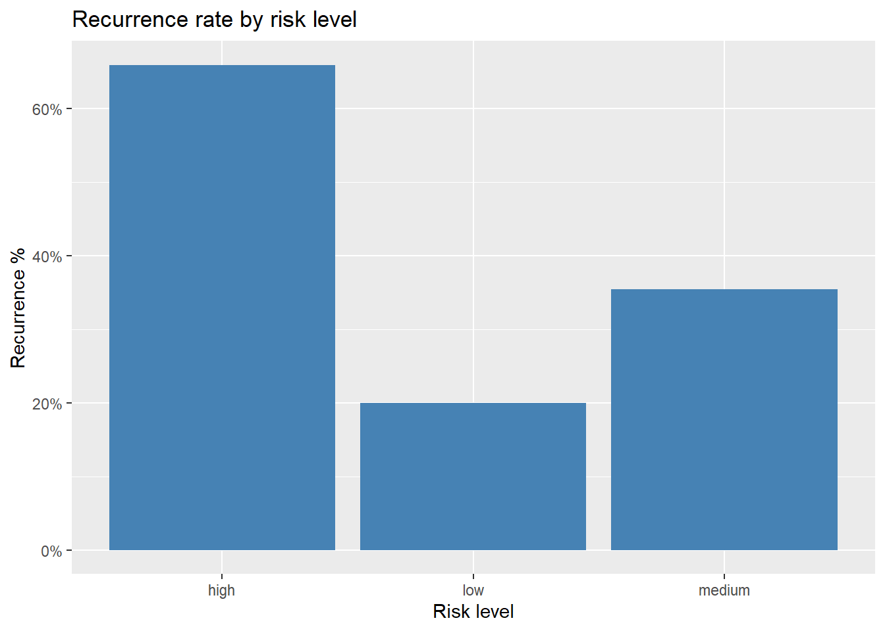
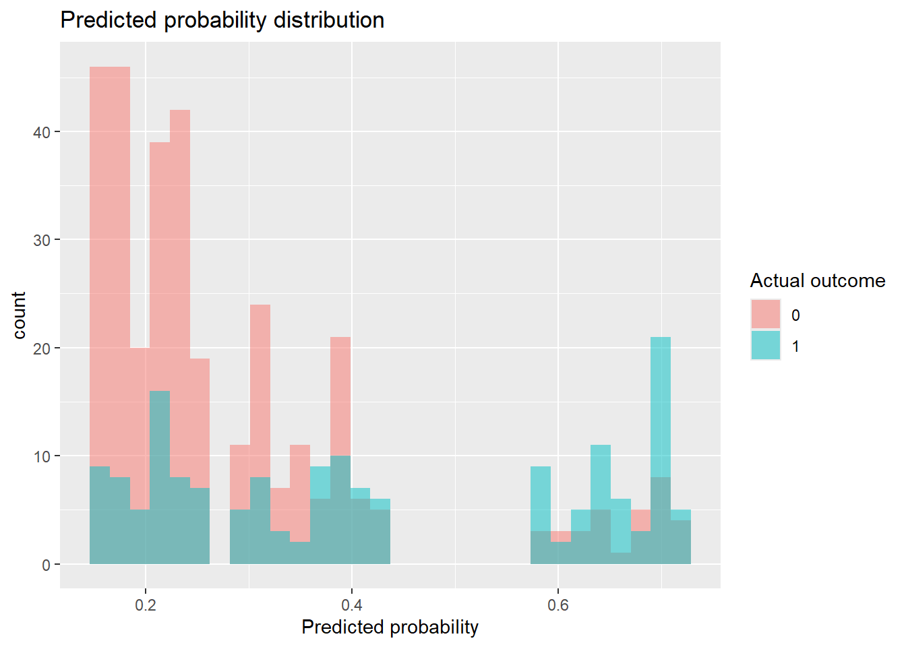
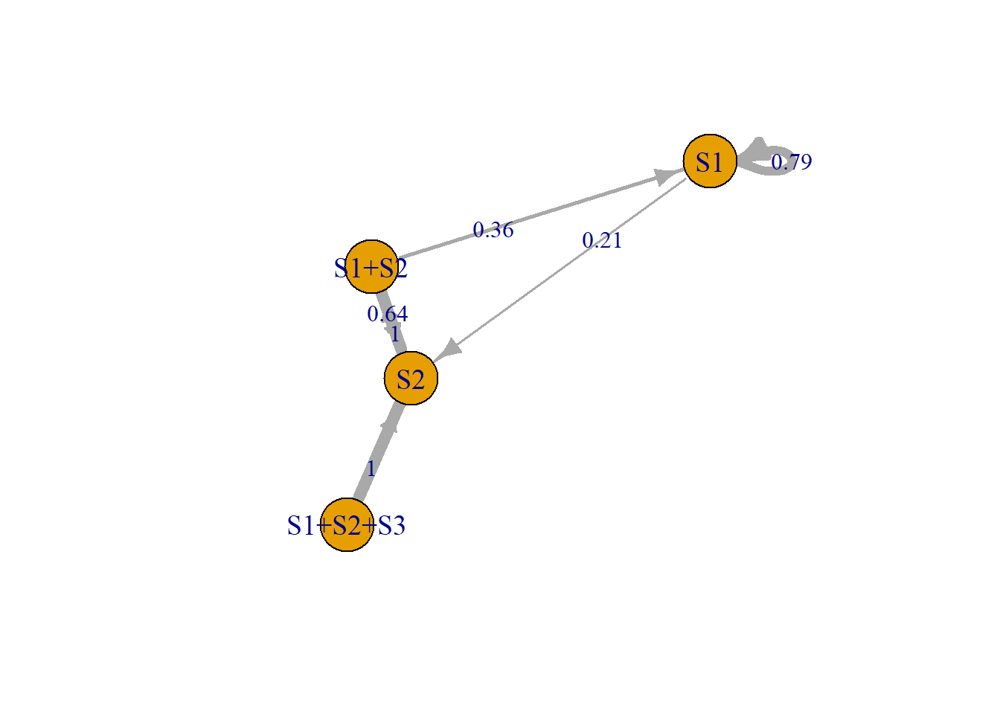

# A tibble: 6 × 4
person_id risk_level episode_first_duration y_recur_within_180
<int> <chr> <int> <dbl>
1 1 low 10 0
2 2 medium 8 0
3 3 low 2 0
4 4 high 8 1
5 5 high 6 1
6 6 low 9 0Recurrence Prediction Model
1 Problem definition
This project aims to predict whether an individual will experience a recurrence event within 180 days, based on information from their first episode. The goal is to explore how different feature representations affect model performance and interpretability.
2 Data simulation
The dataset is simulated to reflect a simplified event-based system.
- Each individual is assigned a risk level (low, medium, high) using replaced random sampling with probability: 0.5, 0.3, and 0.2, respectively
- Recurrence probability is driven primarily by risk level with an assumption of positive relationship between risk level and recurrence probability. Thus, recurrence probability assumes to be 0.2 for low risk level, 0.4 for medium risk level, and 0.7 for high risk level
- A binary outcome of whether an event will recur is defined using a binomial sampling with the recurrence probability
- First episode start dates are sampled randomly between 1/1/2022 and 31/12/2022
- The duration days of first episode events are generated independently and within 10 days, and hence the end date of the first episode events is the episode start dates plus the first episode duration days
- Second episode start dates are defined to be the first episode end date + gap days if the binary outcome of whether an event will recur is 1, where gap days are sampled randomly within 10 and 180 days
- the response binary variable, y, whether an individual will have an recurred event is defined to be 1 if:
- first episode start date is not null, and
- the time window between first episode end date and second episode start date is smaller than or equal to 180 days, otherwise, y = 0
3 Feature engineering
Two types of features are created:
- Continuous: episode duration
- Categorical: episode type (short, medium and long) to relate the episode duration (3, 6 and larger than 6 days)
# A tibble: 6 × 7
person_id risk_level episode_first_duration y_recur_within_180 risk_num
<int> <chr> <int> <dbl> <dbl>
1 1 low 10 0 1
2 2 medium 8 0 2
3 3 low 2 0 1
4 4 high 8 1 3
5 5 high 6 1 3
6 6 low 9 0 1
# ℹ 2 more variables: episode_type <fct>, risk_duration_interaction <dbl>4 Model specification
Two logistic regression models are compared:
- Model A (continuous duration): P(y = 1 | data) = f(risk_level, episode_first_duration)
- Model B (categorical duration): P(y = 1 | data) = f(risk_level, episode type)
5 Model evaluation
- For simplicity, models are evaluated on the same dataset used for training. In a production setting, it should separate training and test data to avoid optimistic bias.
[1] 0.73[1] 0.73[1] 0.676 Visualisation
6.1 Recurrence rate by risk level
Recurrence increases clearly with risk level, confirming that risk is the primary driver in this dataset.

6.2 Predicted probability distribution
The model assigns higher predicted probabilities to actual recurrence cases, indicating it captures meaningful signal.

7 Key findings
Both models produced similar performance. This suggests that:
- Risk level is the primary driver of recurrence
- Episode duration (both continuous and categorical) does not add meaningful predictive signal in this setup
8 Interpretation
This result is expected given the data generating process:
- Recurrence probability is determined by risk level
- Episode duration is randomly generated
Therefore, episode duration does not carry predictive signal and behaves as noise.
9 Conclusions
This project demonstrates:
- How to structure a prediction problem from event data
- The importance of feature design and representation
- The need to evaluate models against baseline performance
Even when additional features are included, they must carry real signal to improve predictive performance.
This is a modelling project that explores how feature representation affects recurrence prediction, highlighting the importance of signal versus noise.
10 Supplements
The following Markov episode transition diagram is a proof-of-concept illustrating how events from multi-source data can be linked into episodes. It demonstrates transition probabilities between sources across consecutive episodes, using synthetic data to reflect real-world data challenges. A combined source state (e.g. S1+S2) indicates that events from multiple sources occurred within a defined temporal window and are treated as part of the same episode.
